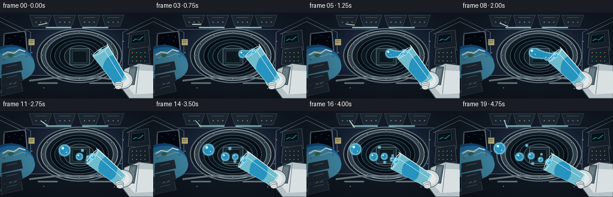
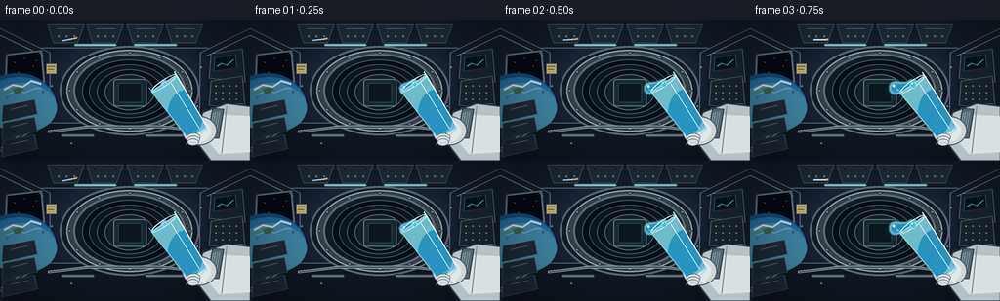
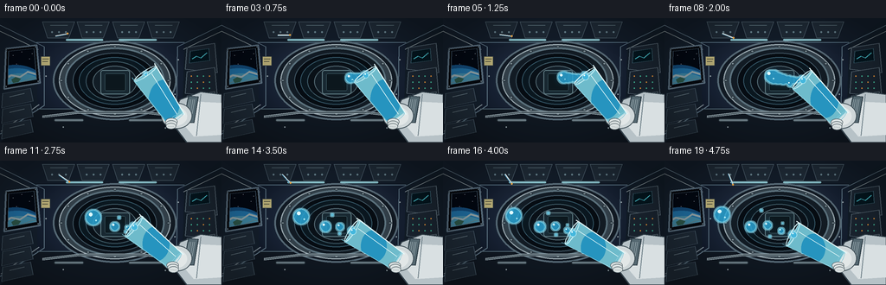
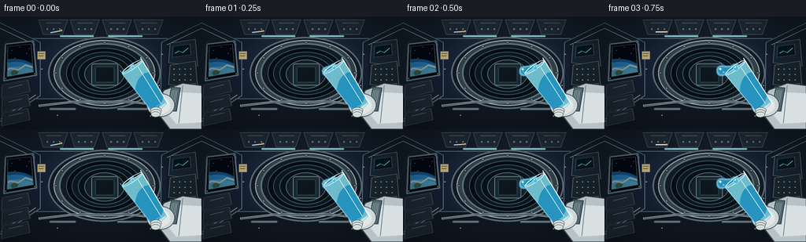

CODING AGENTS AS PIXEL WORLD MODELS
traex/GPT-5.6-Sol · phygen_001
点击播放 · 原生 RGB 像素
逐轮保存的候选
回放视频、检查图与代码变化。
每份候选均可单独播放。实际图片检查记录在下方工具轨迹中。
候选 01播放与检查图
点击播放 · 原生 RGB 像素


展开代码变化
--- 上一保存版本
+++ 本次保存版本
@@ -0,0 +1,326 @@
+from pathlib import Path
+import math
+import numpy as np
+from PIL import Image, ImageDraw, ImageFilter
+import artifact_io
+
+# Deterministic, supersampled procedural render.
+W, H, N, SCALE = 256, 144, 20, 3
+SW, SH = W*SCALE, H*SCALE
+rng = np.random.default_rng(7)
+
+def q(v): return int(round(v*SCALE))
+def box(b): return tuple(q(v) for v in b)
+def pts(a): return [(q(x), q(y)) for x,y in a]
+
+def line(draw, xy, fill, width=1, joint='curve'):
+ draw.line(pts(xy), fill=fill, width=max(1,q(width)), joint=joint)
+
+def ellipse(draw, b, fill=None, outline=None, width=1):
+ draw.ellipse(box(b), fill=fill, outline=outline, width=max(1,q(width)))
+
+def rect(draw, b, fill=None, outline=None, width=1):
+ draw.rectangle(box(b), fill=fill, outline=outline, width=max(1,q(width)))
+
+def rr(draw, b, r, fill=None, outline=None, width=1):
+ draw.rounded_rectangle(box(b), radius=q(r), fill=fill, outline=outline, width=max(1,q(width)))
+
+def poly(draw, p, fill, outline=None, width=1):
+ draw.polygon(pts(p), fill=fill)
+ if outline:
+ draw.line(pts(p+[p[0]]), fill=outline, width=max(1,q(width)), joint='curve')
+
+def layer(): return Image.new('RGBA', (SW, SH), (0,0,0,0))
+
+def static_background():
+ # Cool, low-key cinematic cabin gradient.
+ yy, xx = np.mgrid[0:SH,0:SW]
+ nx, ny = xx/SCALE, yy/SCALE
+ radial = np.exp(-((nx-130)**2/10500 + (ny-68)**2/5200))
+ side = np.clip(np.abs(nx-128)/150,0,1)
+ base = np.zeros((SH,SW,4), dtype=np.uint8)
+ base[...,0] = np.clip(11 + 28*radial - 7*side,0,255)
+ base[...,1] = np.clip(18 + 33*radial - 5*side,0,255)
+ base[...,2] = np.clip(28 + 43*radial,0,255)
+ base[...,3] = 255
+ im = Image.fromarray(base, 'RGBA')
+ d = ImageDraw.Draw(im)
+
+ # Long module perspective shells.
+ poly(d, [(0,0),(256,0),(213,28),(42,28)], (19,29,42,255))
+ poly(d, [(0,144),(256,144),(211,105),(43,105)], (16,24,34,255))
+ poly(d, [(0,0),(42,28),(43,105),(0,144)], (20,31,44,255))
+ poly(d, [(256,0),(213,28),(211,105),(256,144)], (18,29,41,255))
+
+ # Structural illuminated rails and perspective seams.
+ line(d, [(0,8),(51,33),(51,101),(0,134)], (104,128,145,180), 1.0)
+ line(d, [(256,8),(205,33),(204,102),(256,135)], (102,127,144,170), 1.0)
+ line(d, [(0,15),(44,36)], (180,196,202,120), 1)
+ line(d, [(256,15),(212,36)], (180,196,202,100), 1)
+ line(d, [(1,131),(45,100)], (160,177,188,100), 1)
+ line(d, [(255,132),(210,101)], (160,177,188,100), 1)
+ line(d, [(42,28),(213,28)], (94,121,140,160), 1)
+ line(d, [(43,105),(211,105)], (89,112,126,160), 1)
+
+ # Ceiling utility panels.
+ for x0,x1 in [(49,86),(89,126),(130,167),(170,207)]:
+ poly(d, [(x0,4),(x1,4),(x1-7,23),(x0+6,23)], (31,43,55,255), (78,96,109,255), .7)
+ line(d, [(x0+9,8),(x1-8,8)], (116,142,154,120), .7)
+ for bx in np.linspace(x0+11,x1-10,3):
+ ellipse(d, (bx-1,15,bx+1,17), (111,139,151,190))
+ # Soft ceiling light strips.
+ glow = layer(); gd=ImageDraw.Draw(glow)
+ rr(gd,(76,24,119,27),2,(140,219,239,90)); rr(gd,(137,24,181,27),2,(140,219,239,80))
+ glow=glow.filter(ImageFilter.GaussianBlur(q(2.2))); im=Image.alpha_composite(im,glow)
+ d=ImageDraw.Draw(im)
+ rr(d,(76,24,119,26),1,(151,213,224,170)); rr(d,(137,24,181,26),1,(151,213,224,150))
+
+ # Left observation window and blue Earth limb.
+ poly(d, [(7,35),(42,31),(46,75),(5,82)], (5,8,14,255), (92,113,130,255), 2)
+ poly(d, [(10,38),(39,35),(42,71),(9,77)], (2,8,18,255))
+ # Stars in the upper part of the window.
+ for sx,sy in [(15,43),(25,39),(34,47),(19,53),(37,41)]:
+ ellipse(d,(sx-.45,sy-.45,sx+.45,sy+.45),(218,236,255,220))
+ # Earth arc, layered atmospheric horizon.
+ ellipse(d,(-20,54,55,111),(19,75,122,255))
+ ellipse(d,(-18,58,57,112),(32,112,164,255))
+ ellipse(d,(-13,64,58,115),(64,136,165,255))
+ # Clouds and land hints clipped conceptually by window interior.
+ line(d,[(4,71),(13,66),(23,68),(32,62),(42,65)],(215,239,242,175),2.2)
+ line(d,[(7,76),(17,72),(25,74),(37,69),(42,70)],(157,210,217,150),1.1)
+ poly(d,[(13,71),(18,68),(24,70),(21,74),(15,75)],(63,120,97,130))
+ # Window bolts.
+ for sx,sy in [(7,36),(41,33),(44,73),(7,79)]:
+ ellipse(d,(sx-1,sy-1,sx+1,sy+1),(155,170,177,255),(35,48,60,255),.5)
+
+ # Right equipment bays.
+ for y0,y1 in [(34,59),(62,87),(90,111)]:
+ poly(d,[(216,y0),(248,y0-5),(251,y1+4),(214,y1)],(27,38,50,255),(85,101,113,255),1)
+ # Screens and indicator lights.
+ poly(d,[(220,38),(241,35),(242,49),(219,52)],(4,22,31,255),(63,104,120,255),.8)
+ line(d,[(222,47),(227,44),(232,46),(239,40)],(71,190,202,220),1)
+ for y in [67,74,81,95,101]:
+ for x in [221,228,235,242]:
+ c=(69,191,157,230) if (x+y)%3 else (238,151,58,230)
+ ellipse(d,(x-.8,y-.8,x+.8,y+.8),c)
+ # Left storage lockers.
+ for y0 in [87,105,123]:
+ poly(d,[(3,y0),(35,y0-6),(38,y0+9),(2,y0+17)],(30,42,54,255),(75,94,108,255),.8)
+ line(d,[(11,y0+4),(28,y0)],(114,134,145,150),1)
+
+ # Central round hatch, multiple rings for depth.
+ ellipse(d,(61,26,204,118),(18,27,37,255),(91,111,124,255),2.0)
+ ellipse(d,(68,30,197,114),(52,66,76,255),(159,174,181,255),1.3)
+ ellipse(d,(75,34,190,110),(19,28,37,255),(95,118,130,255),2)
+ ellipse(d,(84,40,181,105),(6,12,19,255),(67,89,103,255),1.1)
+ # Hatch interior glow and tunnel rings.
+ ellipse(d,(91,45,174,100),(10,23,32,255),(52,86,102,255),1)
+ ellipse(d,(99,50,166,96),(9,16,23,255),(63,90,102,255),1)
+ ellipse(d,(107,55,158,92),(18,29,38,255),(83,105,114,255),1)
+ # Far hatch rectangle.
+ rr(d,(116,60,150,88),3,(24,40,49,255),(96,124,132,255),1)
+ rr(d,(121,64,145,84),2,(12,23,29,255),(55,82,91,255),.8)
+ # Ring latches.
+ for ang in np.linspace(0,2*math.pi,12,endpoint=False):
+ cx=132.5+62*math.cos(ang); cy=72+39*math.sin(ang)
+ ellipse(d,(cx-2,cy-1.4,cx+2,cy+1.4),(116,132,140,255),(27,39,48,255),.5)
+
+ # Lower rails and handholds.
+ line(d,[(49,114),(91,109),(167,109),(208,114)],(155,172,180,220),3)
+ line(d,[(50,114),(91,109),(167,109),(208,114)],(38,52,61,255),1)
+ rr(d,(62,116,97,120),2,(111,129,138,255),(28,39,48,255),1)
+ rr(d,(148,116,188,120),2,(111,129,138,255),(28,39,48,255),1)
+
+ # Small warning placards / texture (unreadable at video scale, adds realism).
+ rect(d,(47,44,58,55),(196,185,126,220),(46,57,65,255),.6)
+ line(d,[(49,47),(56,47)],(59,61,54,255),.7); line(d,[(49,50),(55,50)],(59,61,54,255),.7)
+ for x,y in [(53,67),(206,48),(202,88),(73,126),(191,127)]:
+ ellipse(d,(x-.7,y-.7,x+.7,y+.7),(161,176,182,210))
+
+ # Vignette.
+ vign = np.clip(((nx-128)/145)**2 + ((ny-72)/93)**2,0,1)
+ va = (80*vign).astype(np.uint8)
+ dark=np.zeros((SH,SW,4),dtype=np.uint8); dark[...,3]=va
+ im=Image.alpha_composite(im,Image.fromarray(dark,'RGBA'))
+ return im
+
+BG = static_background()
+
+def cup_geometry(frame):
+ # Slow deliberate wrist rotation from diagonal toward nearly horizontal.
+ u = frame/(N-1)
+ ang = math.radians(-124 - 27*(u*u*(3-2*u)))
+ B=np.array([202.5,115.5])
+ M=B+62*np.array([math.cos(ang), math.sin(ang)])
+ axis=(M-B)/np.linalg.norm(M-B)
+ perp=np.array([-axis[1],axis[0]])
+ return B,M,axis,perp
+
+def draw_arm(im, frame):
+ d=ImageDraw.Draw(im)
+ u=frame/(N-1)
+ # White station flight-suit sleeve enters from the right, behind the cup.
+ poly(d,[(256,88),(256,144),(216,144),(197,119),(208,94),(232,85)],(183,194,199,255),(49,63,72,255),1.2)
+ poly(d,[(256,98),(256,135),(224,137),(207,117),(216,96)],(217,224,226,255))
+ line(d,[(232,88),(227,136)],(112,129,137,210),1)
+ # Ribbed cuff.
+ poly(d,[(218,90),(229,91),(224,121),(211,120)],(84,103,112,255),(34,49,58,255),1)
+ for k in range(5): line(d,[(216+k*2.2,94),(212+k*2.2,117)],(151,167,173,190),.8)
+ # Glove palm wrapping behind glass.
+ ellipse(d,(186,98,222,128),(207,215,217,255),(66,81,89,255),1)
+ ellipse(d,(192,103,216,124),(226,231,231,255))
+ # Thumb pad.
+ poly(d,[(190,101),(179,91),(174,94),(183,111),(197,117),(204,109)],(220,226,226,255),(69,82,88,255),1)
+ line(d,[(180,96),(192,108),(201,110)],(145,158,163,190),1)
+ # Fingers curled around the lower cup; their front portions are added later.
+ return im
+
+def fluid_mask(frame, M):
+ mask=Image.new('L',(SW,SH),0); md=ImageDraw.Draw(mask)
+ f=frame
+ # Lip bulge exists immediately, establishing continuous pouring action.
+ lipr=2.5+min(f,4)*.6
+ ellipse(md,(M[0]-lipr,M[1]-lipr,M[0]+lipr,M[1]+lipr),255)
+ if f>=1:
+ # The primary mass receives an initial push; no downward acceleration.
+ age=f-1
+ lead=np.array([159.0,70.0])+np.array([-5.15,-0.42])*age
+ r=min(9.0,4.4+.48*age)
+ # Connected neck until capillary pinch-off.
+ if f<=8:
+ for j in range(24):
+ a=j/23
+ # Smooth curve from moving lip to leading globule.
+ c=(1-a)*M+a*lead
+ c[1]+=2.2*math.sin(math.pi*a)*(f/8)
+ rad=(2.2+(r-2.2)*a)+0.65*math.sin(j*1.7+f*.4)
+ ellipse(md,(c[0]-rad,c[1]-rad,c[0]+rad,c[1]+rad),255)
+ else:
+ ellipse(md,(lead[0]-r,lead[1]-r,lead[0]+r,lead[1]+r),255)
+ # Secondary and tertiary globules launched at later instants.
+ emissions=[(6,np.array([153.0,76.0]),np.array([-4.10,0.04]),6.2),
+ (10,np.array([151.0,78.0]),np.array([-3.55,-0.35]),4.8),
+ (14,np.array([149.0,80.0]),np.array([-2.85,0.25]),3.5)]
+ for birth,pos,vel,r0 in emissions:
+ if f>=birth:
+ age=f-birth; c=pos+vel*age
+ r=min(r0,2.0+.62*age)
+ ellipse(md,(c[0]-r,c[1]-r,c[0]+r,c[1]+r),255)
+ # A few tiny satellite beads after breakup, all inertial paths.
+ for birth,pos,vel,r0 in [(8,(147,69),(-3.2,-1.05),1.55),(11,(145,82),(-2.9,.72),1.35),(15,(146,75),(-2.4,-.65),1.1)]:
+ if f>=birth:
+ age=f-birth;c=np.array(pos)+np.array(vel)*age
+ ellipse(md,(c[0]-r0,c[1]-r0,c[0]+r0,c[1]+r0),255)
+ return mask
+
+def render_fluid(im, frame, M):
+ mask=fluid_mask(frame,M)
+ # Turquoise/clear water glow.
+ glowmask=mask.filter(ImageFilter.GaussianBlur(q(3.2)))
+ glow=Image.new('RGBA',(SW,SH),(25,155,220,0)); glow.putalpha(glowmask.point(lambda p:p*70//255))
+ im=Image.alpha_composite(im,glow)
+ # Deep translucent body and bright capillary edge.
+ body=Image.new('RGBA',(SW,SH),(43,164,211,0)); body.putalpha(mask.point(lambda p:p*205//255))
+ im=Image.alpha_composite(im,body)
+ expanded=mask.filter(ImageFilter.MaxFilter(2*SCALE+1))
+ edge=np.asarray(expanded,dtype=np.int16)-np.asarray(mask.filter(ImageFilter.MinFilter(2*SCALE+1)),dtype=np.int16)
+ edge=np.clip(edge,0,255).astype(np.uint8)
+ edgeim=Image.new('RGBA',(SW,SH),(150,228,244,0)); edgeim.putalpha(Image.fromarray((edge*.55).astype(np.uint8)))
+ im=Image.alpha_composite(im,edgeim)
+ # Specular glints placed on individual free globules.
+ d=ImageDraw.Draw(im)
+ if frame>=1:
+ age=frame-1; c=np.array([159.,70.])+np.array([-5.15,-.42])*age; r=min(9.,4.4+.48*age)
+ ellipse(d,(c[0]-r*.55,c[1]-r*.65,c[0]-r*.08,c[1]-r*.18),(224,253,255,205))
+ ellipse(d,(c[0]+r*.28,c[1]+r*.25,c[0]+r*.48,c[1]+r*.45),(178,238,249,170))
+ for birth,pos,vel,r0 in [(6,np.array([153.,76.]),np.array([-4.1,.04]),6.2),(10,np.array([151.,78.]),np.array([-3.55,-.35]),4.8),(14,np.array([149.,80.]),np.array([-2.85,.25]),3.5)]:
+ if frame>=birth:
+ a=frame-birth;c=pos+vel*a;r=min(r0,2+.62*a)
+ ellipse(d,(c[0]-r*.55,c[1]-r*.60,c[0]-r*.12,c[1]-r*.18),(225,253,255,190))
+ return im
+
+def draw_cup(im, frame, B, M, axis, perp):
+ d=ImageDraw.Draw(im)
+ topw, botw=15.3,11.2
+ TL=M+perp*topw; TR=M-perp*topw; BL=B+perp*botw; BR=B-perp*botw
+ cup_poly=[tuple(TL),tuple(TR),tuple(BR),tuple(BL)]
+ # Glass shadow/refraction.
+ poly(d,cup_poly,(110,187,203,30),(164,218,228,220),1.1)
+
+ # Remaining water inside the cup, clipped to its tapered body.
+ cupmask=Image.new('L',(SW,SH),0); cmd=ImageDraw.Draw(cupmask); poly(cmd,cup_poly,255)
+ watermask=Image.new('L',(SW,SH),0); wmd=ImageDraw.Draw(watermask)
+ frac=max(.13,.72-.033*frame)
+ # Microgravity liquid stays as a rounded cohesive mass toward the mouth-side wall.
+ center=B+axis*(18+18*(1-frac)) + perp*(2.5*math.sin(frame*.25))
+ rx=13+7*frac; ry=15+14*frac
+ ellipse(wmd,(center[0]-rx,center[1]-ry,center[0]+rx,center[1]+ry),220)
+ wm=np.minimum(np.asarray(cupmask),np.asarray(watermask)).astype(np.uint8)
+ wi=Image.new('RGBA',(SW,SH),(29,143,190,0)); wi.putalpha(Image.fromarray((wm*.58).astype(np.uint8)))
+ im=Image.alpha_composite(im,wi); d=ImageDraw.Draw(im)
+
+ # Rim ellipse is perpendicular to cup axis; approximate with polygonal ellipse.
+ rim=[]
+ for k in range(40):
+ a=2*math.pi*k/40
+ p=M+perp*(topw*math.cos(a))+axis*(3.1*math.sin(a))
+ rim.append(tuple(p))
+ d.line(pts(rim+[rim[0]]),fill=(193,237,244,235),width=q(1.05),joint='curve')
+ # dark far side and bright near rim.
+ near=[]
+ for k in range(21):
+ a=math.pi*k/20
+ p=M+perp*(topw*math.cos(a))+axis*(3.1*math.sin(a)); near.append(tuple(p))
+ d.line(pts(near),fill=(226,251,252,235),width=q(.8))
+ # Base ellipse.
+ base=[]
+ for k in range(32):
+ a=2*math.pi*k/32
+ p=B+perp*(botw*math.cos(a))+axis*(2.5*math.sin(a));base.append(tuple(p))
+ d.line(pts(base+[base[0]]),fill=(132,201,217,190),width=q(.8))
+ # Glass highlights down both walls.
+ line(d,[tuple(TL+axis*4),tuple(BL-axis*3)],(229,249,250,180),1.1)
+ line(d,[tuple(TR+axis*5),tuple(BR-axis*4)],(117,198,217,140),.8)
+ mid1=M+perp*6+(-axis*4); mid2=B+perp*4+axis*3
+ line(d,[tuple(mid1),tuple(mid2)],(235,252,252,100),.7)
+
+ # Front glove fingers curl around the base; anatomy overlap sells the grip.
+ for off,sz in [(0,1.0),(5,0.92),(10,0.84)]:
+ c=B-perp*(6+off*.35)-axis*(1+off*.4)
+ ellipse(d,(c[0]-7*sz,c[1]-4.2*sz,c[0]+7*sz,c[1]+4.2*sz),(218,225,225,255),(87,101,107,255),.7)
+ line(d,[(c[0]-4*sz,c[1]),(c[0]+4*sz,c[1]+.5)],(151,163,167,180),.7)
+ return im
+
+def draw_floating_pen(im, frame):
+ # A slowly tumbling loose pen is a second, understated zero-g cue.
+ d=ImageDraw.Draw(im)
+ a=math.radians(-12+frame*4.2); c=np.array([71+frame*.28,19+frame*.12]); v=np.array([math.cos(a),math.sin(a)])
+ p=np.array([-v[1],v[0]])
+ p1=c-v*7; p2=c+v*7
+ line(d,[tuple(p1),tuple(p2)],(213,222,222,230),1.4)
+ line(d,[tuple(p1+p*.8),tuple(p2+p*.8)],(58,135,173,240),.7)
+ ellipse(d,(p2[0]-1,p2[1]-1,p2[0]+1,p2[1]+1),(230,159,66,255))
+
+def make_frame(f):
+ im=BG.copy()
+ draw_floating_pen(im,f)
+ B,M,axis,perp=cup_geometry(f)
+ im=draw_arm(im,f)
+ # External water first, then glass rim at the lip, preserving depth.
+ im=render_fluid(im,f,M)
+ im=draw_cup(im,f,B,M,axis,perp)
+ # Repaint a small bright water bead over the near rim.
+ d=ImageDraw.Draw(im); lip=M-axis*1.0
+ r=2.1+min(f,5)*.35
+ ellipse(d,(lip[0]-r,lip[1]-r,lip[0]+r,lip[1]+r),(68,183,221,205),(185,238,247,220),.7)
+ ellipse(d,(lip[0]-r*.5,lip[1]-r*.65,lip[0]-r*.08,lip[1]-r*.22),(235,255,255,220))
+ # Downsample for anti-aliased details and enforce RGB uint8.
+ im=im.convert('RGB').resize((W,H),Image.Resampling.LANCZOS)
+ return np.asarray(im,dtype=np.uint8)
+
+def main():
+ frames=np.stack([make_frame(i) for i in range(N)],axis=0)
+ artifact_io.save(frames,Path(__file__).resolve().parent)
+
+if __name__=='__main__':
+ main()
候选 02播放与检查图
点击播放 · 原生 RGB 像素


展开代码变化
--- 上一保存版本
+++ 本次保存版本
@@ -43,7 +43,7 @@
base[...,1] = np.clip(18 + 33*radial - 5*side,0,255)
base[...,2] = np.clip(28 + 43*radial,0,255)
base[...,3] = 255
- im = Image.fromarray(base, 'RGBA')
+ im = Image.fromarray(base)
d = ImageDraw.Draw(im)
# Long module perspective shells.
@@ -78,17 +78,22 @@
# Left observation window and blue Earth limb.
poly(d, [(7,35),(42,31),(46,75),(5,82)], (5,8,14,255), (92,113,130,255), 2)
poly(d, [(10,38),(39,35),(42,71),(9,77)], (2,8,18,255))
- # Stars in the upper part of the window.
+ # Window scene is separately masked so the Earth limb cannot spill onto
+ # the surrounding pressure hull.
+ scene=layer(); sd=ImageDraw.Draw(scene)
for sx,sy in [(15,43),(25,39),(34,47),(19,53),(37,41)]:
- ellipse(d,(sx-.45,sy-.45,sx+.45,sy+.45),(218,236,255,220))
- # Earth arc, layered atmospheric horizon.
- ellipse(d,(-20,54,55,111),(19,75,122,255))
- ellipse(d,(-18,58,57,112),(32,112,164,255))
- ellipse(d,(-13,64,58,115),(64,136,165,255))
- # Clouds and land hints clipped conceptually by window interior.
- line(d,[(4,71),(13,66),(23,68),(32,62),(42,65)],(215,239,242,175),2.2)
- line(d,[(7,76),(17,72),(25,74),(37,69),(42,70)],(157,210,217,150),1.1)
- poly(d,[(13,71),(18,68),(24,70),(21,74),(15,75)],(63,120,97,130))
+ ellipse(sd,(sx-.45,sy-.45,sx+.45,sy+.45),(218,236,255,220))
+ ellipse(sd,(-20,54,55,111),(19,75,122,255))
+ ellipse(sd,(-18,58,57,112),(32,112,164,255))
+ ellipse(sd,(-13,64,58,115),(64,136,165,255))
+ line(sd,[(4,71),(13,66),(23,68),(32,62),(42,65)],(215,239,242,175),2.2)
+ line(sd,[(7,76),(17,72),(25,74),(37,69),(42,70)],(157,210,217,150),1.1)
+ poly(sd,[(13,71),(18,68),(24,70),(21,74),(15,75)],(63,120,97,180))
+ window_mask=Image.new('L',(SW,SH),0)
+ poly(ImageDraw.Draw(window_mask),[(10,38),(39,35),(42,71),(9,77)],255)
+ scene.putalpha(Image.fromarray(np.minimum(np.asarray(scene.getchannel('A')),np.asarray(window_mask)).astype(np.uint8)))
+ im=Image.alpha_composite(im,scene); d=ImageDraw.Draw(im)
+ line(d,[(10,38),(39,35),(42,71),(9,77),(10,38)],(77,101,119,230),.7)
# Window bolts.
for sx,sy in [(7,36),(41,33),(44,73),(7,79)]:
ellipse(d,(sx-1,sy-1,sx+1,sy+1),(155,170,177,255),(35,48,60,255),.5)
@@ -141,7 +146,7 @@
vign = np.clip(((nx-128)/145)**2 + ((ny-72)/93)**2,0,1)
va = (80*vign).astype(np.uint8)
dark=np.zeros((SH,SW,4),dtype=np.uint8); dark[...,3]=va
- im=Image.alpha_composite(im,Image.fromarray(dark,'RGBA'))
+ im=Image.alpha_composite(im,Image.fromarray(dark))
return im
BG = static_background()
可观测工具轨迹
实际执行的命令与返回图片。
命令 1exit 0
/bin/bash -lc "cat prompt.txt && printf '\\n--- GENERATION_RULES.md ---\\n' && cat GENERATION_RULES.md"
命令 2exit 0
/bin/bash -lc "cat task_spec.json && printf '\\n--- FILES ---\\n' && find . -maxdepth 2 -type f -printf '%p\\n' | sort"
命令 3exit 0
/bin/bash -lc "which ffmpeg || true; which python3 || true; python3 - <<'PY' mods=['numpy','PIL','cv2','imageio','matplotlib'] for m in mods: try: x=__import__(m); print(m, 'OK', getattr(x,'__version__','')) except Exception as e: print(m, 'NO',e) PY"
命令 4exit 0
/bin/bash -lc 'cat artifact_io.py'
命令 5exit 0
/bin/bash -lc "cat > generate.py <<'PY'
from pathlib import Path
import math
import numpy as np
from PIL import Image, ImageDraw, ImageFilter
import artifact_io
# Deterministic, supersampled procedural render.
W, H, N, SCALE = 256, 144, 20, 3
SW, SH = W*SCALE, H*SCALE
rng = np.random.default_rng(7)
def q(v): return int(round(v*SCALE))
def box(b): return tuple(q(v) for v in b)
def pts(a): return [(q(x), q(y)) for x,y in a]
def line(draw, xy, fill, width=1, joint='curve'):
draw.line(pts(xy), fill=fill, width=max(1,q(width)), joint=joint)
def ellipse(draw, b, fill=None, outline=None, width=1):
draw.ellipse(box(b), fill=fill, outline=outline, width=max(1,q(width)))
def rect(draw, b, fill=None, outline=None, width=1):
draw.rectangle(box(b), fill=fill, outline=outline, width=max(1,q(width)))
def rr(draw, b, r, fill=None, outline=None, width=1):
draw.rounded_rectangle(box(b), radius=q(r), fill=fill, outline=outline, width=max(1,q(width)))
def poly(draw, p, fill, outline=None, width=1):
draw.polygon(pts(p), fill=fill)
if outline:
draw.line(pts(p+[p[0]]), fill=outline, width=max(1,q(width)), joint='curve')
def layer(): return Image.new('RGBA', (SW, SH), (0,0,0,0))
def static_background():
# Cool, low-key cinematic cabin gradient.
yy, xx = np.mgrid[0:SH,0:SW]
nx, ny = xx/SCALE, yy/SCALE
radial = np.exp(-((nx-130)**2/10500 + (ny-68)**2/5200))
side = np.clip(np.abs(nx-128)/150,0,1)
base = np.zeros((SH,SW,4), dtype=np.uint8)
base[...,0] = np.clip(11 + 28*radial - 7*side,0,255)
base[...,1] = np.clip(18 + 33*radial - 5*side,0,255)
base[...,2] = np.clip(28 + 43*radial,0,255)
base[...,3] = 255
im = Image.fromarray(base, 'RGBA')
d = ImageDraw.Draw(im)
# Long module perspective shells.
poly(d, [(0,0),(256,0),(213,28),(42,28)], (19,29,42,255))
poly(d, [(0,144),(256,144),(211,105),(43,105)], (16,24,34,255))
poly(d, [(0,0),(42,28),(43,105),(0,144)], (20,31,44,255))
poly(d, [(256,0),(213,28),(211,105),(256,144)], (18,29,41,255))
# Structural illuminated rails and perspective seams.
line(d, [(0,8),(51,33),(51,101),(0,134)], (104,128,145,180), 1.0)
line(d, [(256,8),(205,33),(204,102),(256,135)], (102,127,144,170), 1.0)
line(d, [(0,15),(44,36)], (180,196,202,120), 1)
line(d, [(256,15),(212,36)], (180,196,202,100), 1)
line(d, [(1,131),(45,100)], (160,177,188,100), 1)
line(d, [(255,132),(210,101)], (160,177,188,100), 1)
line(d, [(42,28),(213,28)], (94,121,140,160), 1)
line(d, [(43,105),(211,105)], (89,112,126,160), 1)
# Ceiling utility panels.
for x0,x1 in [(49,86),(89,126),(130,167),(170,207)]:
poly(d, [(x0,4),(x1,4),(x1-7,23),(x0+6,23)], (31,43,55,255), (78,96,109,255), .7)
line(d, [(x0+9,8),(x1-8,8)], (116,142,154,120), .7)
for bx in np.linspace(x0+11,x1-10,3):
ellipse(d, (bx-1,15,bx+1,17), (111,139,151,190))
# Soft ceiling light strips.
glow = layer(); gd=ImageDraw.Draw(glow)
rr(gd,(76,24,119,27),2,(140,219,239,90)); rr(gd,(137,24,181,27),2,(140,219,239,80))
glow=glow.filter(ImageFilter.GaussianBlur(q(2.2))); im=Image.alpha_composite(im,glow)
d=ImageDraw.Draw(im)
rr(d,(76,24,119,26),1,(151,213,224,170)); rr(d,(137,24,181,26),1,(151,213,224,150))
# Left observation window and blue Earth limb.
poly(d, [(7,35),(42,31),(46,75),(5,82)], (5,8,14,255), (92,113,130,255), 2)
poly(d, [(10,38),(39,35),(42,71),(9,77)], (2,8,18,255))
# Stars in the upper part of the window.
for sx,sy in [(15,43),(25,39),(34,47),(19,53),(37,41)]:
ellipse(d,(sx-.45,sy-.45,sx+.45,sy+.45),(218,236,255,220))
# Earth arc, layered atmospheric horizon.
ellipse(d,(-20,54,55,111),(19,75,122,255))
ellipse(d,(-18,58,57,112),(32,112,164,255))
ellipse(d,(-13,64,58,115),(64,136,165,255))
# Clouds and land hints clipped conceptually by window interior.
line(d,[(4,71),(13,66),(23,68),(32,62),(42,65)],(215,239,242,175),2.2)
line(d,[(7,76),(17,72),(25,74),(37,69),(42,70)],(157,210,217,150),1.1)
poly(d,[(13,71),(18,68),(24,70),(21,74),(15,75)],(63,120,97,130))
# Window bolts.
for sx,sy in [(7,36),(41,33),(44,73),(7,79)]:
ellipse(d,(sx-1,sy-1,sx+1,sy+1),(155,170,177,255),(35,48,60,255),.5)
# Right equipment bays.
for y0,y1 in [(34,59),(62,87),(90,111)]:
poly(d,[(216,y0),(248,y0-5),(251,y1+4),(214,y1)],(27,38,50,255),(85,101,113,255),1)
# Screens and indicator lights.
poly(d,[(220,38),(241,35),(242,49),(219,52)],(4,22,31,255),(63,104,120,255),.8)
line(d,[(222,47),(227,44),(232,46),(239,40)],(71,190,202,220),1)
for y in [67,74,81,95,101]:
for x in [221,228,235,242]:
c=(69,191,157,230) if (x+y)%3 else (238,151,58,230)
ellipse(d,(x-.8,y-.8,x+.8,y+.8),c)
# Left storage lockers.
for y0 in [87,105,123]:
poly(d,[(3,y0),(35,y0-6),(38,y0+9),(2,y0+17)],(30,42,54,255),(75,94,108,255),.8)
line(d,[(11,y0+4),(28,y0)],(114,134,145,150),1)
# Central round hatch, multiple rings for depth.
ellipse(d,(61,26,204,118),(18,27,37,255),(91,111,124,255),2.0)
ellipse(d,(68,30,197,114),(52,66,76,255),(159,174,181,255),1.3)
ellipse(d,(75,34,190,110),(19,28,37,255),(95,118,130,255),2)
ellipse(d,(84,40,181,105),(6,12,19,255),(67,89,103,255),1.1)
# Hatch interior glow and tunnel rings.
ellipse(d,(91,45,174,100),(10,23,32,255),(52,86,102,255),1)
ellipse(d,(99,50,166,96),(9,16,23,255),(63,90,102,255),1)
ellipse(d,(107,55,158,92),(18,29,38,255),(83,105,114,255),1)
# Far hatch rectangle.
rr(d,(116,60,150,88),3,(24,40,49,255),(96,124,132,255),1)
rr(d,(121,64,145,84),2,(12,23,29,255),(55,82,91,255),.8)
# Ring latches.
for ang in np.linspace(0,2*math.pi,12,endpoint=False):
cx=132.5+62*math.cos(ang); cy=72+39*math.sin(ang)
ellipse(d,(cx-2,cy-1.4,cx+2,cy+1.4),(116,132,140,255),(27,39,48,255),.5)
# Lower rails and handholds.
line(d,[(49,114),(91,109),(167,109),(208,114)],(155,172,180,220),3)
line(d,[(50,114),(91,109),(167,109),(208,114)],(38,52,61,255),1)
rr(d,(62,116,97,120),2,(111,129,138,255),(28,39,48,255),1)
rr(d,(148,116,188,120),2,(111,129,138,255),(28,39,48,255),1)
# Small warning placards / texture (unreadable at video scale, adds realism).
rect(d,(47,44,58,55),(196,185,126,220),(46,57,65,255),.6)
line(d,[(49,47),(56,47)],(59,61,54,255),.7); line(d,[(49,50),(55,50)],(59,61,54,255),.7)
for x,y in [(53,67),(206,48),(202,88),(73,126),(191,127)]:
ellipse(d,(x-.7,y-.7,x+.7,y+.7),(161,176,182,210))
# Vignette.
vign = np.clip(((nx-128)/145)**2 + ((ny-72)/93)**2,0,1)
va = (80*vign).astype(np.uint8)
dark=np.zeros((SH,SW,4),dtype=np.uint8); dark[...,3]=va
im=Image.alpha_composite(im,Image.fromarray(dark,'RGBA'))
return im
BG = static_background()
def cup_geometry(frame):
# Slow deliberate wrist rotation from diagonal toward nearly horizontal.
u = frame/(N-1)
ang = math.radians(-124 - 27*(u*u*(3-2*u)))
B=np.array([202.5,115.5])
M=B+62*np.array([math.cos(ang), math.sin(ang)])
axis=(M-B)/np.linalg.norm(M-B)
perp=np.array([-axis[1],axis[0]])
return B,M,axis,perp
def draw_arm(im, frame):
d=ImageDraw.Draw(im)
u=frame/(N-1)
# White station flight-suit sleeve enters from the right, behind the cup.
poly(d,[(256,88),(256,144),(216,144),(197,119),(208,94),(232,85)],(183,194,199,255),(49,63,72,255),1.2)
poly(d,[(256,98),(256,135),(224,137),(207,117),(216,96)],(217,224,226,255))
line(d,[(232,88),(227,136)],(112,129,137,210),1)
# Ribbed cuff.
poly(d,[(218,90),(229,91),(224,121),(211,120)],(84,103,112,255),(34,49,58,255),1)
for k in range(5): line(d,[(216+k*2.2,94),(212+k*2.2,117)],(151,167,173,190),.8)
# Glove palm wrapping behind glass.
ellipse(d,(186,98,222,128),(207,215,217,255),(66,81,89,255),1)
ellipse(d,(192,103,216,124),(226,231,231,255))
# Thumb pad.
poly(d,[(190,101),(179,91),(174,94),(183,111),(197,117),(204,109)],(220,226,226,255),(69,82,88,255),1)
line(d,[(180,96),(192,108),(201,110)],(145,158,163,190),1)
# Fingers curled around the lower cup; their front portions are added later.
return im
def fluid_mask(frame, M):
mask=Image.new('L',(SW,SH),0); md=ImageDraw.Draw(mask)
f=frame
# Lip bulge exists immediately, establishing continuous pouring action.
lipr=2.5+min(f,4)*.6
ellipse(md,(M[0]-lipr,M[1]-lipr,M[0]+lipr,M[1]+lipr),255)
if f>=1:
# The primary mass receives an initial push; no downward acceleration.
age=f-1
lead=np.array([159.0,70.0])+np.array([-5.15,-0.42])*age
r=min(9.0,4.4+.48*age)
# Connected neck until capillary pinch-off.
if f<=8:
for j in range(24):
a=j/23
# Smooth curve from moving lip to leading globule.
c=(1-a)*M+a*lead
c[1]+=2.2*math.sin(math.pi*a)*(f/8)
rad=(2.2+(r-2.2)*a)+0.65*math.sin(j*1.7+f*.4)
ellipse(md,(c[0]-rad,c[1]-rad,c[0]+rad,c[1]+rad),255)
else:
ellipse(md,(lead[0]-r,lead[1]-r,lead[0]+r,lead[1]+r),255)
# Secondary and tertiary globules launched at later instants.
emissions=[(6,np.array([153.0,76.0]),np.array([-4.10,0.04]),6.2),
(10,np.array([151.0,78.0]),np.array([-3.55,-0.35]),4.8),
(14,np.array([149.0,80.0]),np.array([-2.85,0.25]),3.5)]
for birth,pos,vel,r0 in emissions:
if f>=birth:
age=f-birth; c=pos+vel*age
r=min(r0,2.0+.62*age)
ellipse(md,(c[0]-r,c[1]-r,c[0]+r,c[1]+r),255)
# A few tiny satellite beads after breakup, all inertial paths.
for birth,pos,vel,r0 in [(8,(147,69),(-3.2,-1.05),1.55),(11,(145,82),(-2.9,.72),1.35),(15,(146,75),(-2.4,-.65),1.1)]:
if f>=birth:
age=f-birth;c=np.array(pos)+np.array(vel)*age
ellipse(md,(c[0]-r0,c[1]-r0,c[0]+r0,c[1]+r0),255)
return mask
def render_fluid(im, frame, M):
mask=fluid_mask(frame,M)
# Turquoise/clear water glow.
glowmask=mask.filter(ImageFilter.GaussianBlur(q(3.2)))
glow=Image.new('RGBA',(SW,SH),(25,155,220,0)); glow.putalpha(glowmask.point(lambda p:p*70//255))
im=Image.alpha_composite(im,glow)
# Deep translucent body and bright capillary edge.
body=Image.new('RGBA',(SW,SH),(43,164,211,0)); body.putalpha(mask.point(lambda p:p*205//255))
im=Image.alpha_composite(im,body)
expanded=mask.filter(ImageFilter.MaxFilter(2*SCALE+1))
edge=np.asarray(expanded,dtype=np.int16)-np.asarray(mask.filter(ImageFilter.MinFilter(2*SCALE+1)),dtype=np.int16)
edge=np.clip(edge,0,255).astype(np.uint8)
edgeim=Image.new('RGBA',(SW,SH),(150,228,244,0)); edgeim.putalpha(Image.fromarray((edge*.55).astype(np.uint8)))
im=Image.alpha_composite(im,edgeim)
# Specular glints placed on individual free globules.
d=ImageDraw.Draw(im)
if frame>=1:
age=frame-1; c=np.array([159.,70.])+np.array([-5.15,-.42])*age; r=min(9.,4.4+.48*age)
ellipse(d,(c[0]-r*.55,c[1]-r*.65,c[0]-r*.08,c[1]-r*.18),(224,253,255,205))
ellipse(d,(c[0]+r*.28,c[1]+r*.25,c[0]+r*.48,c[1]+r*.45),(178,238,249,170))
for birth,pos,vel,r0 in [(6,np.array([153.,76.]),np.array([-4.1,.04]),6.2),(10,np.array([151.,78.]),np.array([-3.55,-.35]),4.8),(14,np.array([149.,80.]),np.array([-2.85,.25]),3.5)]:
if frame>=birth:
a=frame-birth;c=pos+vel*a;r=min(r0,2+.62*a)
ellipse(d,(c[0]-r*.55,c[1]-r*.60,c[0]-r*.12,c[1]-r*.18),(225,253,255,190))
return im
def draw_cup(im, frame, B, M, axis, perp):
d=ImageDraw.Draw(im)
topw, botw=15.3,11.2
TL=M+perp*topw; TR=M-perp*topw; BL=B+perp*botw; BR=B-perp*botw
cup_poly=[tuple(TL),tuple(TR),tuple(BR),tuple(BL)]
# Glass shadow/refraction.
poly(d,cup_poly,(110,187,203,30),(164,218,228,220),1.1)
# Remaining water inside the cup, clipped to its tapered body.
cupmask=Image.new('L',(SW,SH),0); cmd=ImageDraw.Draw(cupmask); poly(cmd,cup_poly,255)
watermask=Image.new('L',(SW,SH),0); wmd=ImageDraw.Draw(watermask)
frac=max(.13,.72-.033*frame)
# Microgravity liquid stays as a rounded cohesive mass toward the mouth-side wall.
center=B+axis*(18+18*(1-frac)) + perp*(2.5*math.sin(frame*.25))
rx=13+7*frac; ry=15+14*frac
ellipse(wmd,(center[0]-rx,center[1]-ry,center[0]+rx,center[1]+ry),220)
wm=np.minimum(np.asarray(cupmask),np.asarray(watermask)).astype(np.uint8)
wi=Image.new('RGBA',(SW,SH),(29,143,190,0)); wi.putalpha(Image.fromarray((wm*.58).astype(np.uint8)))
im=Image.alpha_composite(im,wi); d=ImageDraw.Draw(im)
# Rim ellipse is perpendicular to cup axis; approximate with polygonal ellipse.
rim=[]
for k in range(40):
a=2*math.pi*k/40
p=M+perp*(topw*math.cos(a))+axis*(3.1*math.sin(a))
rim.append(tuple(p))
d.line(pts(rim+[rim[0]]),fill=(193,237,244,235),width=q(1.05),joint='curve')
# dark far side and bright near rim.
near=[]
for k in range(21):
a=math.pi*k/20
p=M+perp*(topw*math.cos(a))+axis*(3.1*math.sin(a)); near.append(tuple(p))
d.line(pts(near),fill=(226,251,252,235),width=q(.8))
# Base ellipse.
base=[]
for k in range(32):
a=2*math.pi*k/32
p=B+perp*(botw*math.cos(a))+axis*(2.5*math.sin(a));base.append(tuple(p))
d.line(pts(base+[base[0]]),fill=(132,201,217,190),width=q(.8))
# Glass highlights down both walls.
line(d,[tuple(TL+axis*4),tuple(BL-axis*3)],(229,249,250,180),1.1)
line(d,[tuple(TR+axis*5),tuple(BR-axis*4)],(117,198,217,140),.8)
mid1=M+perp*6+(-axis*4); mid2=B+perp*4+axis*3
line(d,[tuple(mid1),tuple(mid2)],(235,252,252,100),.7)
# Front glove fingers curl around the base; anatomy overlap sells the grip.
for off,sz in [(0,1.0),(5,0.92),(10,0.84)]:
c=B-perp*(6+off*.35)-axis*(1+off*.4)
ellipse(d,(c[0]-7*sz,c[1]-4.2*sz,c[0]+7*sz,c[1]+4.2*sz),(218,225,225,255),(87,101,107,255),.7)
line(d,[(c[0]-4*sz,c[1]),(c[0]+4*sz,c[1]+.5)],(151,163,167,180),.7)
return im
def draw_floating_pen(im, frame):
# A slowly tumbling loose pen is a second, understated zero-g cue.
d=ImageDraw.Draw(im)
a=math.radians(-12+frame*4.2); c=np.array([71+frame*.28,19+frame*.12]); v=np.array([math.cos(a),math.sin(a)])
p=np.array([-v[1],v[0]])
p1=c-v*7; p2=c+v*7
line(d,[tuple(p1),tuple(p2)],(213,222,222,230),1.4)
line(d,[tuple(p1+p*.8),tuple(p2+p*.8)],(58,135,173,240),.7)
ellipse(d,(p2[0]-1,p2[1]-1,p2[0]+1,p2[1]+1),(230,159,66,255))
def make_frame(f):
im=BG.copy()
draw_floating_pen(im,f)
B,M,axis,perp=cup_geometry(f)
im=draw_arm(im,f)
# External water first, then glass rim at the lip, preserving depth.
im=render_fluid(im,f,M)
im=draw_cup(im,f,B,M,axis,perp)
# Repaint a small bright water bead over the near rim.
d=ImageDraw.Draw(im); lip=M-axis*1.0
r=2.1+min(f,5)*.35
ellipse(d,(lip[0]-r,lip[1]-r,lip[0]+r,lip[1]+r),(68,183,221,205),(185,238,247,220),.7)
ellipse(d,(lip[0]-r*.5,lip[1]-r*.65,lip[0]-r*.08,lip[1]-r*.22),(235,255,255,220))
# Downsample for anti-aliased details and enforce RGB uint8.
im=im.convert('RGB').resize((W,H),Image.Resampling.LANCZOS)
return np.asarray(im,dtype=np.uint8)
def main():
frames=np.stack([make_frame(i) for i in range(N)],axis=0)
artifact_io.save(frames,Path(__file__).resolve().parent)
if __name__=='__main__':
main()
PY
python3 generate.py
python3 - <<'PY'
import numpy as np
from PIL import Image
z=np.load('pixels.npz')['pixels']
print('pixels',z.shape,z.dtype,'range',hex(int(z.min())),hex(int(z.max())))
for i in [0,1,5,10,15,19]:
im=np.array(Image.open(f'frames/{i:02}.png'))
print(i,im.shape,im.dtype,im.mean(axis=(0,1)).round(1),len(np.unique(im.reshape(-1,3),axis=0)))
PY"命令 6exit 0
/bin/bash -lc "python3 generate.py && python3 - <<'PY'
from pathlib import Path
import json, numpy as np
from PIL import Image
spec=json.loads(Path('task_spec.json').read_text())
files=sorted(Path('frames').glob('*.png'))
arr=np.stack([np.asarray(Image.open(p)) for p in files])
assert arr.shape==(spec['frames'],spec['height'],spec['width'],3),arr.shape
assert arr.dtype==np.uint8 and all(Image.open(p).mode=='RGB' for p in files)
# motion / temporal checks
mad=np.abs(np.diff(arr.astype(np.int16),axis=0)).mean(axis=(1,2,3))
changed=(np.diff(arr.astype(np.int16),axis=0)"'!=0).any(axis=3).mean(axis=(1,2))
print('"'VALID',arr.shape,arr.dtype,'RGB_frames=',len(files))
print('frame-to-frame MAD min/mean/max:',mad.min().round(3),mad.mean().round(3),mad.max().round(3))
print('changed-pixel fraction min/mean/max:',changed.min().round(3),changed.mean().round(3),changed.max().round(3))
print('artifacts:',[(p.name,p.stat().st_size) for p in [Path('pixels.npz'),Path('inspection.png'),Path('transition_check.png'),Path('index.html')]])
PY"保存候选 2 份；完成命令 6 次；可验证图片返回 0 张。原始 API 响应与完整日志保留在本地。